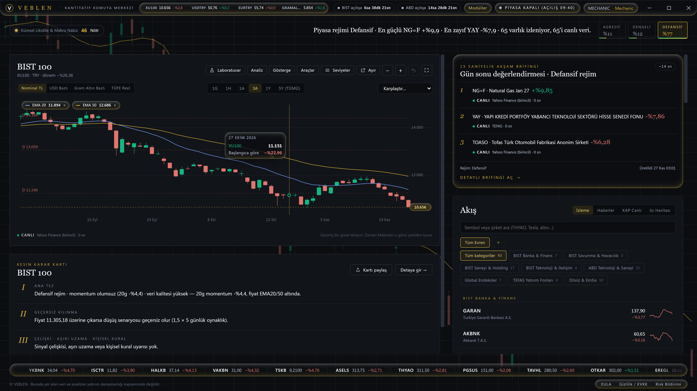
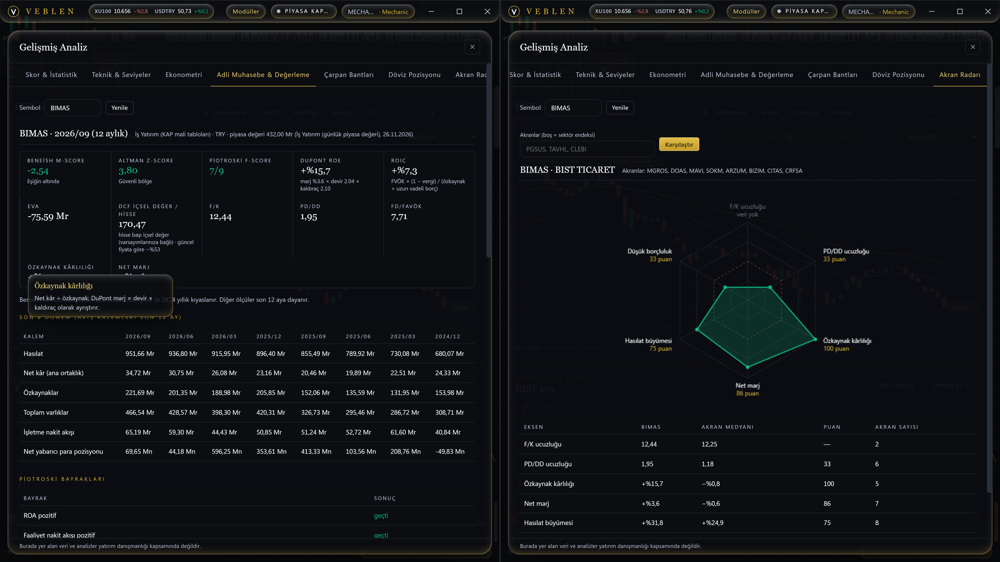
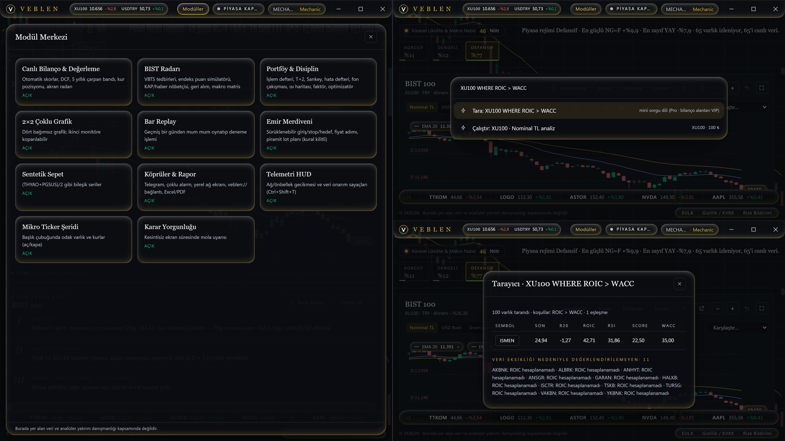

Four engines
Screens from the running app on live public data. Multi-panel images place several screens side by side.







A native Windows terminal for Borsa İstanbul, global markets and Turkish funds. Calculations run in a local Rust core; your portfolio, ledger and notes stay on your computer.
SHA-256 fingerprint · VEBLEN_3.2.1_x64-setup.exe · 27 November 202659df1b6a2c055c343f4bea56dd400d185bc40646d934ca7b1f372673fe2ed881
Commercial software: an access key is required. The interface is in Turkish. Not investment advice; it does not place orders.
Small, local, and explicit about where its numbers come from.
| VEBLEN | Typical Electron / web terminal | |
|---|---|---|
| Engine | Rust core + the WebView2 runtime Windows already provides | Ships its own Chromium and Node.js, or lives in a browser tab |
| Installer | 6.4 MB | Has to carry a browser engine |
| Memory, dashboard on live data | 192 MB private working set, 7 processes (180 MB minimised) | Not benchmarked here |
| Launch to first paint | ≈ 1.10 s with a warm disk cache | Not benchmarked here |
| Statement verification (BIST industrials) | Two sources cross-checked. A year-end column on a different inflation-accounting (TMS 29) basis than the interim columns switches the source, visibly. Figures are never rescaled | Depends on the data vendor |
| Your records | Portfolio, ledger and notes in a local SQLite database | Depends on the product |
Measured on v3.2.1, 27 November 2026 (AMD Ryzen 5 5600X 6-Core Processor, 32 GB RAM, Windows 11 Pro). Memory: private working set of VEBLEN and its WebView2 child processes, 60 s after the dashboard settles. First paint: median of five launches without a reboot, on a test build of the same code. Other products were not benchmarked, so no numbers are claimed for them.
Screens from the running app on live public data. Multi-panel images place several screens side by side.



Zero blur: an SVG displacement lens with a colour-split edge and a specular rim, in two files under the MIT licence. This panel and the bar above use it.
<link rel="stylesheet" href="liquid-glass.css"> <div data-liquid-glass>Hello</div> <script src="glass.js"></script>
Windows 10 or 11, x64.
VEBLEN_3.2.1_x64-setup.exe. Run Get-FileHash .\VEBLEN_3.2.1_x64-setup.exe and compare with the fingerprint at the top.
If SmartScreen appears: More info → Run anyway, after the fingerprint matches. Updates install only if their signature verifies.
One key binds to one computer. Request a key. The licence server receives a hash of your key and a hashed device identifier.